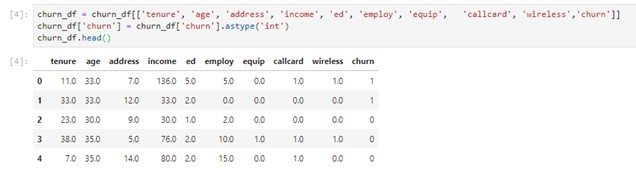
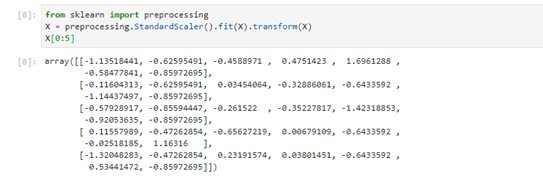

Logistic regression for electricity distribution companies
For an electricity distribution company, telecom company, social media company, etc., it is of a high interest to hold onto costumers as these companies are based on a subscription service. Keeping costumers is typically more profitable than acquire new ones, thus focusing on how to avoid costumer churn is very important for an electricity distribution company.
Logistic Regression
Avoiding costumer churn can be done with data analysis with Python packages. With logistic regression one can estimate the probability of whether a costumer will leave or not. The logistic model is a statistical model that uses a logistic function to model a binary dependent variable. Logistic regression estimates the parameters of a logistic model and is a form of binomial regression. A binary logistic model has a dependant variable with two possible values. Examples of values could be win/lose, healthy/sick, yes/no, churn/no churn, and these values are represented by an indicator variable where the two values are labelled 0 and 1.
Telecom example
In this article an example of a telecom company will be used, but the principals are the same for an electricity distribution company. The dataset used in this article provides information to help predict what behavior will help retain customers.
The dataset includes information about:
- Customers who left within the last month – the column is called Churn
- Services that each customer has signed up for – phone, multiple lines, internet, online security, online backup, device protection, tech support, and streaming TV and movies
- Customer account information – how long they had been a customer, contract, payment method, paperless billing, monthly charges, and total charges
- Demographic info about customers – gender, age range, and if they have partners and dependents
Getting Started
First we need to import the necessary packages:
import pandas as pd
import pylab as pl
import numpy as np
import scipy.optimize as opt
from sklearn import preprocessing
%matplotlib inline
import matplotlib.pyplot as plt
After importing the data to Python we compress it and convert it to integer. Compressing is done to make the data simpler to work with by selecting presumably important measures, consequently some important information is lost that could have improved the logistic regression. Remember that 1 means churn and 0 means no churn.

Normalizing The Dataset
We define X and y for our dataset and normalize the dataset:
X = np.asarray(churn_df[['tenure', 'age', 'address', 'income', 'ed', 'employ', 'equip']])
X[0:5]
y = np.asarray(churn_df['churn'])
y [0:5]

Training And Testing
We split our data into train and test set with the following code:
from sklearn.model_selection import train_test_split
X_train, X_test, y_train, y_test = train_test_split( X, y, test_size=0.2, random_state=4)
print ('Train set:', X_train.shape, y_train.shape)
print ('Test set:', X_test.shape, y_test.shape)
This sets the data in the following manner:
Train set: (160, 7) (160,)
Test set: (40, 7) (40,)
Modeling
We build our model using LogisticRegression from Scikit-learn package. With this function logistic regression is implemented and we can used different numerical optimizers to find parameters (e.g. ‘liblinear’, ‘saga’, ‘sag’ solvers ). Logistic Regression in Scikit-learn supports regularization. This is a technique utilized to solve overfitting in machine learning models. C parameter indicates inverse of regularization strength which must be a positive float (decimal). Let us fit our model with the train set and we predict it using our test set:
from sklearn.linear_model import LogisticRegression
from sklearn.metrics import confusion_matrix
LR = LogisticRegression(C=0.01, solver='liblinear').fit(X_train,y_train)
yhat = LR.predict(X_test)
yhat
The result is the following array:
[0, 0, 0, 0, 0, 0, 0, 0, 1, 0, 0, 0, 1, 1, 0, 0, 0, 1, 1, 0, 0, 0, 0, 0, 0, 0, 0, 0, 0, 0, 0, 0, 1, 0, 0, 0, 1, 0, 0, 0]
Predicting Probability
Finally we can predict the probability of churn or no churn. We use the function predict_proba which returns estimates for all classes, ordered by the label of classes. So, the first column is the probability of class 1, P(Y=1|X), and second column is the probability of class 0, P(Y=0|X):
yhat_prob = LR.predict_proba(X_test)
yhat_prob
The results are given as an array. Below are the first 5 (out of 28) rows of the array:
[0.54132919, 0.45867081],
[0.60593357, 0.39406643],
[0.56277713, 0.43722287],
[0.63432489, 0.36567511],
[0.56431839, 0.43568161]
Evaluation
One way of looking at the accuracy of a classifier is to look at a confusion matrix.
from sklearn.metrics import classification_report, confusion_matrix
import itertools
def plot_confusion_matrix(cm, classes,
normalize=False,
title='Confusion matrix',
cmap=plt.cm.Blues):
"""
This function prints and plots the confusion matrix.
Normalization can be applied by setting `normalize=True`.
"""
if normalize:
cm = cm.astype('float') / cm.sum(axis=1)[:, np.newaxis]
print("Normalized confusion matrix")
else:
print('Confusion matrix, without normalization')
print(cm)
plt.imshow(cm, interpolation='nearest', cmap=cmap)
plt.title(title)
plt.colorbar()
tick_marks = np.arange(len(classes))
plt.xticks(tick_marks, classes, rotation=45)
plt.yticks(tick_marks, classes)
fmt = '.2f' if normalize else 'd'
thresh = cm.max() / 2.
for i, j in itertools.product(range(cm.shape[0]), range(cm.shape[1])):
plt.text(j, i, format(cm[i, j], fmt),
horizontalalignment="center",
color="white" if cm[i, j] > thresh else "black")
plt.tight_layout()
plt.ylabel('True label')
plt.xlabel('Predicted label')
print(confusion_matrix(y_test, yhat, labels=[1,0]))
# Compute confusion matrix
cnf_matrix = confusion_matrix(y_test, yhat, labels=[1,0])
np.set_printoptions(precision=2)
# Plot non-normalized confusion matrix
plt.figure()
plot_confusion_matrix(cnf_matrix, classes=['churn=1','churn=0'],normalize= False, title='Confusion matrix')
The first row is for customers whose actual churn value in test set is 1. As you can calculate, out of 40 customers, the churn value of 15 of them is 1. And out of these 15, the classifier correctly predicted 6 of them as 1, and 9 of them as 0.
It means, for 6 customers, the actual churn value were 1 in the test set, and classifier also correctly predicted those as 1. However, while the actual label of 9 customers were 1, the classifier predicted those as 0, which is not very good. We can consider it as error of the model for first row.
For the customers with churn value 0 we look at the second row. It looks like there were 25 customers with churn value of 0. The classifier correctly predicted 24 of them as 0, and one of them wrongly as 1. So, it has done a good job in predicting the customers with churn value 0. A good thing about the confusion matrix is that it shows the ability of the model to correctly predict or separate the classes. In specific case of binary classifier we can interpret these numbers as the count of true positives, false positives, true negatives, and false negatives.
Ultimately we find the F1 score. The F1 score is the harmonic average of the precision and recall, where an F1 score reaches its best value at 1 (perfect precision and recall) and worst at 0. It is a good way to show if a classifer has a good value for recall and precision. The average accuracy for this classifier is 0.72 in our case.
print (classification_report(y_test, yhat))
Sources and credits
Jupyter Notebook used with Python inspired by IBM course material.